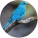

Blue Bridge
Connect languages. Bridge the world.
0 / 5000
TRANSLATION
文
Translate this webpage
Translate readable page text and keep watching for newly loaded content. Restore the original text whenever you like.
Preparing translation…0%
0 / 0 sections
Translation history
Saved only on this device.
Preferences
Translation privacy
Translation requests are sent to Google's publicly accessible translation endpoint. Local history and exclusions stay in Chrome storage on this device.
Keyboard shortcuts: open Alt+Shift+B · translate selected text Alt+Shift+S · translate page Alt+Shift+T · restore page Alt+Shift+R. Change them at chrome://extensions/shortcuts.
Website exclusions
The floating button and page translation are disabled on listed websites and their subdomains.
♥
About Blue Bridge
A simple bridge between languages and people.